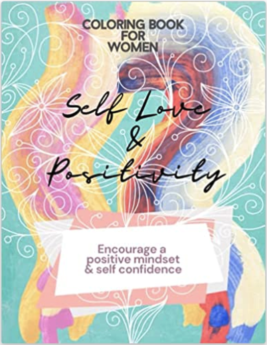
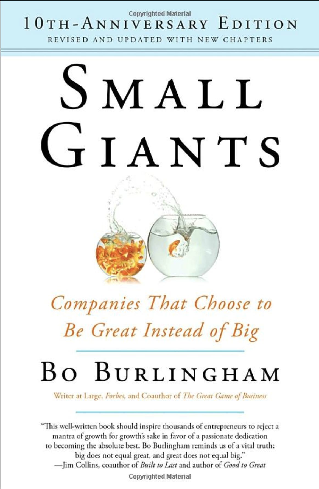
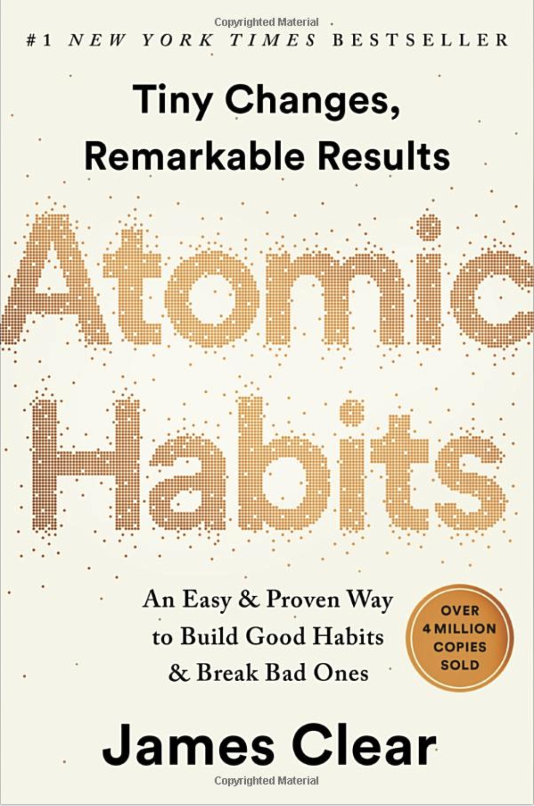
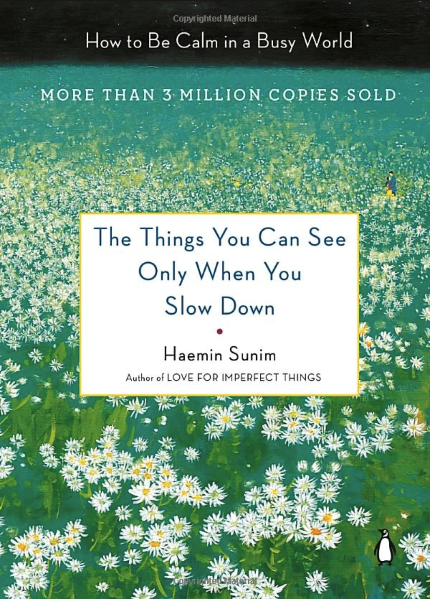
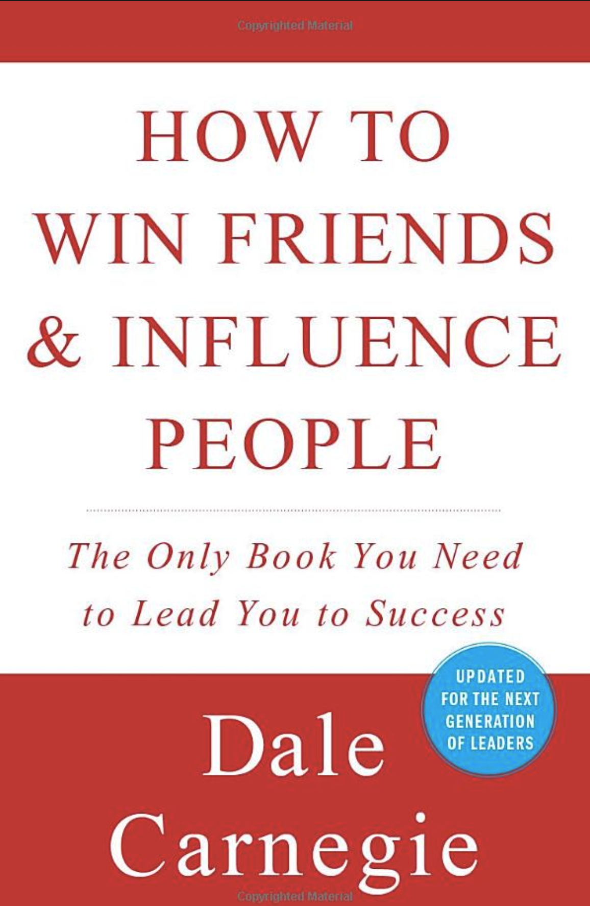
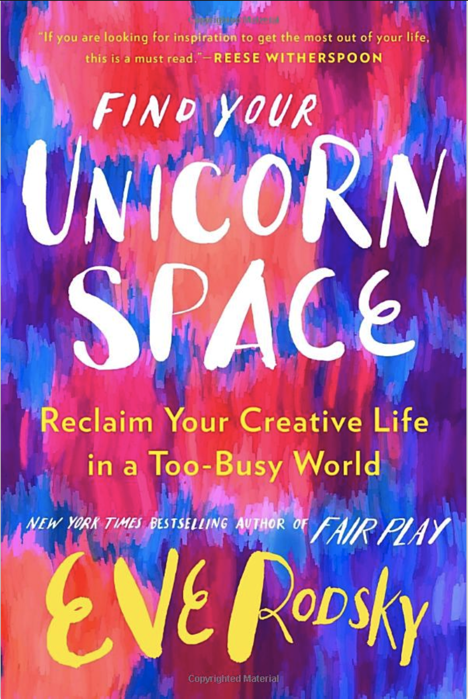
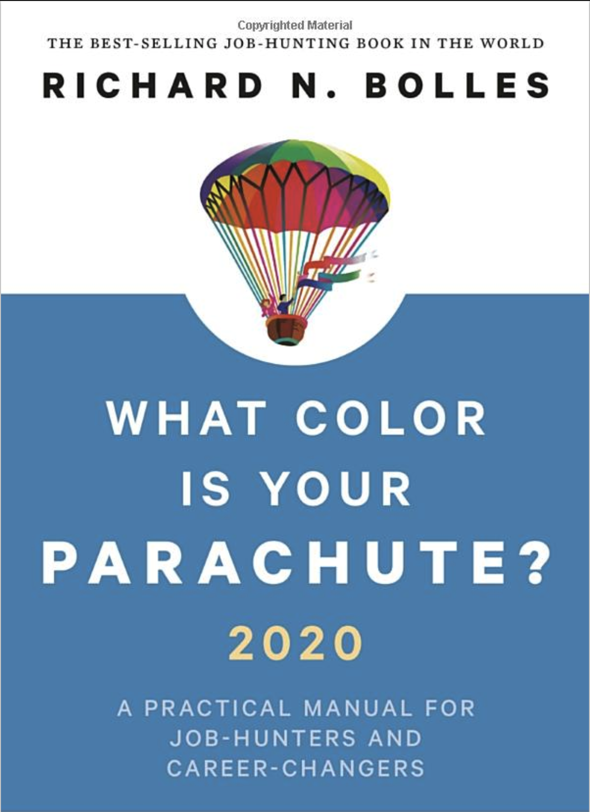

Hello.
About Me
As a committed problem solver and an independent introvert, I am someone rather artistically inclined enough to say these elements get translated well into my work.
My introduction to code was during my days in University writting my first Hello world! in Java. To be honest, I had a rough time trying to
grasp
programming concepts. I came to the realization that, I am naturally wired to question everything
often finding myself putting
together questions
like: Who started this idea? What problem is this meant to solve? Where can I apply this skill? When
should I apply this skill? Why do I need to understand this? How can I explain this in layman's
terms?
You see, once you figure out your personal method of learning, everything else begins to make sense.
Art
Art makes everything exquisitely beautiful. Being someone who enjoys crafts that enable me to use my imagination, it is possible that you may catch me sketching once in a while. Often times you may find me painting, coloring, drawing, learning about color mixing, or putting together a book. Yes, a book! Art is my crutch and what I use to meditate. It's my unicorn space. What's yours?
My favorite artist is Oscar-Claude Monet. Something about his paintings really resonates with me. Especially "The Water Lillies".
Check out my first ever published coloring book on Amazon.

Books
Nowadays I am constantly learning new things. It may vary between technology, art, literature, music, personal health or growth, including fitness. Many of the books I have had the opportunity to digest include a mix of hardcover, paperback, kindle, and audibles. Among the numerous books I have read, there are a select few that I found to have meaningful lessons.
Personal Growth
-
NKJV Study Bible by Thomas Nelson -
The Untethered Soul by Michael A. Singer -
Tools of Titans by Tim Ferriss -

Small Giants by Bo Burlingham -
12 Rules for Life by Jordan B. Peterson -

Atomic Habits by James Clear -
Wabi Sabi: Japanese Wisdom for a Perfectly Imperfect Life by Beth Kempton -

The Things You Can See Only When You Slow Down by Haemin Sunim -
Ikigai: The Japanese Secret to a Long and Happy Life -
The Ikigai Journey: A Practical Guide to Finding Happiness and Purpose the Japanese Way by Hector Garcia and Francesc Miralles -
Inner Work by Robert Johnson -

How To Win Friends & Influence People by Dale Carnegie -
Plato Complete Works Edited by John M. Cooper -

Find Your Unicorn Space by Eve Rodsky -

What Color Is Your Parachute? by Richard N. Bolles
Fiction
-
The Midnight Library by Matt Haig -
The Wind-Up Bird Chronicle by Haruki Murakami -
Be With You by Takuji Ichikawa -
The Book Thief by Markus Zusak
Software Programming
Technology
Among my interests for technology you may find me reading about System Design, Engineering Principles and Tools, to Frontend and Backend concepts.
Lately I have been looking into the newest trends with Frontend tools and improving my skills, because as you know, technology is constantly evolving and we must keep up with the trend.
Currently, I am reading about HTML semantics, and practicing my CSS. While studying Front End tech and tools, my favorite library by far has been React.js. Nothing made me happier than when 'hooks' were released. There is still a lot I need to learn though, but I know plenty enough to build a single page application.
Here is a list of resources that would benefit anyone looking to learn more about Software Engineering concepts and technology overall.
Music
I have created a playlist aimed to help me focus when I am studying or coding. Check it out on Spotify.